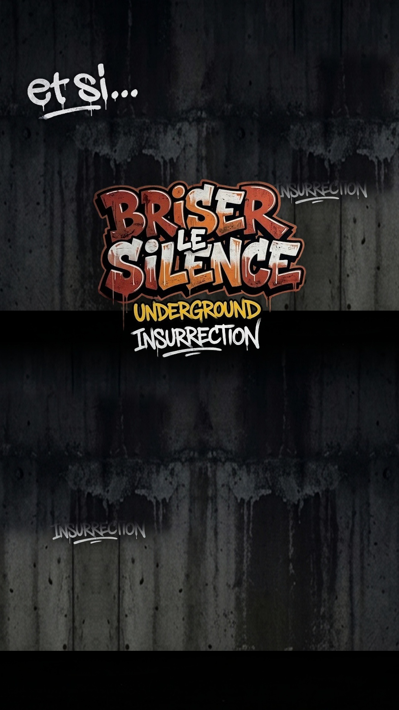

Emplacement
Caméra TikTok
Caméra TikTok
LIVE • UNDERGROUND INSURRECTION
UNDERGROUND
INSURRECTION
🔥 THÈME DU LIVE EN COURS
#BriserLeSilence
SONS ENGAGÉS : PUNK • TECHNO • HARDCORE • HIP-HOP • METAL
Des morceaux qui portent nos luttes : contre l'inceste/VSS, antifa & féministe
UNDERGROUND INSURRECTION
En attente de lecture...